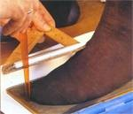
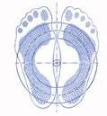
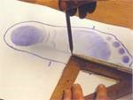
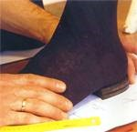
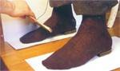
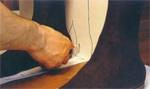
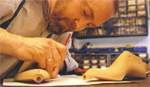

Huella y Perspectiva
Huella
Tras realizar el dibujo del contorno, se toma la huella del pie con el pedígrafo, que transmite una imagen precisa del puente y refleja los puntos de cruce de los arcos y la situación de los dedos.
Se pinta con tinta uno de los lados de una esterilla de goma de textura muy apretada. A continuación se coloca un papel sobre la superficie pintada. La toma de la huella se realiza en posición sentada, aunque se presiona ligeramente cada pie sobre el aparato. Cuando el peso del cuerpo se sitúa sobre la planta del pie, el color de la estera se transmite al papel; en los puntos donde se soporta más peso, el color se oscurece. Al confeccionar la horma, el hormero reproduce las manchas como ligeros abultamientos en la suela.
Los arcos longitudinales y latitudinales perfectos apenas dejan huellas, pero si toda superficie de la suela está cubierta de color, ello indica una de las deformaciones más corrientes: el hundimiento del puente.
Este tipo de hundimiento puede ser contrarrestado con el uso temprano de plantillas correctoras y con zapatos cómodos de buena confección. Por este motivo, para el zapatero es muy importante formarse una imagen precisa del estado del puente.


Situados uno junto a otro, los pies forman una bóveda en forma de cúpula.

La línea que une el dedo pulgar con el talón determina la longitud real del pie.

Con el pedígrafo se obtiene la huella del pie.
Perspectiva
El contorno lateral proporciona información adicional sobre la forma del pie. El zapatero sitúa un tacón de la altura que tendrá el del nuevo zapato bajo el pie, que a su vez descansa sobre la hoja con las medidas. De esta forma, el pie adopta la posición que tomará una vez dentro del zapato. A continuación, coloca un papel perpendicularmente al pie para reproducir la imagen lateral. Dicha imagen mostrará la altura de los dedos, los abultamientos del empeine y la curvatura del talón. La imagen del talón resulta de gran ayuda para la determinación de la anchura del tacón y del tipo de zapato. Además, la altura del tobillo proporciona información adicional al zapatero, puesto que puede influenciar la altura y la constitución de la pala del zapato.
Una vez determinado el contorno y la huella del pie, sus distintos aspectos y puntos críticos, el zapatero marca los puntos en que el pie del cliente se diferencia de la media sobre la horma provisional, que servirá para confeccionar la horma a medida.

El contorno lateral registra la altura de los dedos y del empeine

Esta perspectiva del pie refleja la forma del talón

La altura del tobillo es importante para la confección de botas y zapatos.

Se comprueban de nuevo todas las medidas.